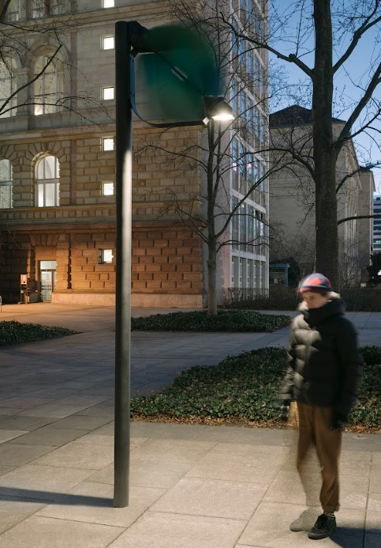

Una nueva manera de dar luz. Tobías Trübenbacher es el jovén que desarrolló el farol autosuficiente “PAPILIO” , la cual implica la generación de su propia electricidad a través de la energía eólica.
Hay una creciente contaminación lumínica y cinética que impacta de manera negativa en el ecosistema, afectando a humanos y a demás seres de la naturaleza.
Este reemplazo a los faroles convencionales,cuenta con un sistema que no genera emisiones de carbono y es amigable con el planeta. La farola autosuficiente se alimenta de energía limpia y se enciende solo cuando es necesario, por lo que trae un gran ahorro, eficiencia y reduce la huella ambiental.
La invención está diseñada con cuatro palas aerodinámicas y funciona gracias a una mini turbina que aprovecha la energía del viento para generar su propia electricidad El joven alemán, estudiante de diseño, propone que pueden iluminarse ciudades enteras sin necesidad de contaminar. PAPILIO demuestra ser una excelente opción para cambiar nuestro alumbrado público e iluminar las calles con una nueva conciencia. Usemos nuestra propia luz para generar otra luz en el mundo.